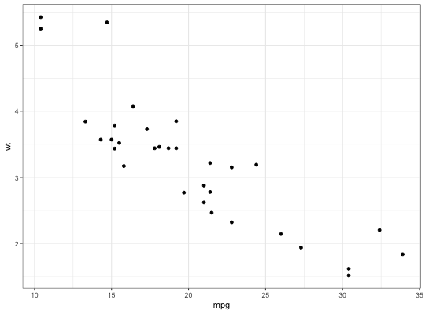
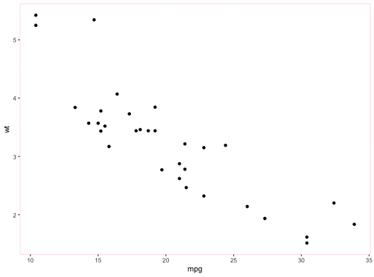
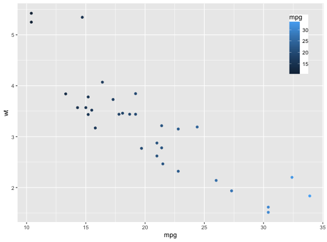

Get, set and update themes.
Use theme_get to get the current theme, and theme_set to
completely override it. theme_update and theme_replace are
shorthands for changing individual elements in the current theme.
theme_update uses the + operator, so that any unspecified
values in the theme element will default to the values they are set in the
theme. theme_replace will completely replace the element, so any
unspecified values will overwrite the current value in the theme with NULLs.
theme_update(...) theme_replace(...) theme_get() theme_set(new)
Arguments
- ...
- named list of theme settings
- new
- new theme (a list of theme elements)
See also
%+replace% and +.gg
Examples

theme_set(old) p#theme_replace NULLs out the fill attribute of panel.background, #resulting in a white background: theme_get()$panel.background#> List of 5 #> $ fill : chr "grey92" #> $ colour : logi NA #> $ size : NULL #> $ linetype : NULL #> $ inherit.blank: logi TRUE #> - attr(*, "class")= chr [1:2] "element_rect" "element" #>#> List of 5 #> $ fill : NULL #> $ colour : chr "pink" #> $ size : NULL #> $ linetype : NULL #> $ inherit.blank: logi FALSE #> - attr(*, "class")= chr [1:2] "element_rect" "element" #>ptheme_set(old) #theme_update only changes the colour attribute, leaving the others intact: old <- theme_update(panel.background = element_rect(colour = "pink")) theme_get()$panel.background#> List of 5 #> $ fill : chr "grey92" #> $ colour : chr "pink" #> $ size : NULL #> $ linetype : NULL #> $ inherit.blank: logi FALSE #> - attr(*, "class")= chr [1:2] "element_rect" "element" #>ptheme_set(old) theme_get()#> List of 57 #> $ line :List of 6 #> ..$ colour : chr "black" #> ..$ size : num 0.5 #> ..$ linetype : num 1 #> ..$ lineend : chr "butt" #> ..$ arrow : logi FALSE #> ..$ inherit.blank: logi TRUE #> ..- attr(*, "class")= chr [1:2] "element_line" "element" #> $ rect :List of 5 #> ..$ fill : chr "white" #> ..$ colour : chr "black" #> ..$ size : num 0.5 #> ..$ linetype : num 1 #> ..$ inherit.blank: logi TRUE #> ..- attr(*, "class")= chr [1:2] "element_rect" "element" #> $ text :List of 11 #> ..$ family : chr "" #> ..$ face : chr "plain" #> ..$ colour : chr "black" #> ..$ size : num 11 #> ..$ hjust : num 0.5 #> ..$ vjust : num 0.5 #> ..$ angle : num 0 #> ..$ lineheight : num 0.9 #> ..$ margin :Classes 'margin', 'unit' atomic [1:4] 0 0 0 0 #> .. .. ..- attr(*, "valid.unit")= int 8 #> .. .. ..- attr(*, "unit")= chr "pt" #> ..$ debug : logi FALSE #> ..$ inherit.blank: logi TRUE #> ..- attr(*, "class")= chr [1:2] "element_text" "element" #> $ axis.title.x :List of 11 #> ..$ family : NULL #> ..$ face : NULL #> ..$ colour : NULL #> ..$ size : NULL #> ..$ hjust : NULL #> ..$ vjust : num 1 #> ..$ angle : NULL #> ..$ lineheight : NULL #> ..$ margin :Classes 'margin', 'unit' atomic [1:4] 5.5 0 0 0 #> .. .. ..- attr(*, "valid.unit")= int 8 #> .. .. ..- attr(*, "unit")= chr "pt" #> ..$ debug : NULL #> ..$ inherit.blank: logi TRUE #> ..- attr(*, "class")= chr [1:2] "element_text" "element" #> $ axis.title.x.top :List of 11 #> ..$ family : NULL #> ..$ face : NULL #> ..$ colour : NULL #> ..$ size : NULL #> ..$ hjust : NULL #> ..$ vjust : num 0 #> ..$ angle : NULL #> ..$ lineheight : NULL #> ..$ margin :Classes 'margin', 'unit' atomic [1:4] 0 0 5.5 0 #> .. .. ..- attr(*, "valid.unit")= int 8 #> .. .. ..- attr(*, "unit")= chr "pt" #> ..$ debug : NULL #> ..$ inherit.blank: logi TRUE #> ..- attr(*, "class")= chr [1:2] "element_text" "element" #> $ axis.title.y :List of 11 #> ..$ family : NULL #> ..$ face : NULL #> ..$ colour : NULL #> ..$ size : NULL #> ..$ hjust : NULL #> ..$ vjust : num 1 #> ..$ angle : num 90 #> ..$ lineheight : NULL #> ..$ margin :Classes 'margin', 'unit' atomic [1:4] 0 5.5 0 0 #> .. .. ..- attr(*, "valid.unit")= int 8 #> .. .. ..- attr(*, "unit")= chr "pt" #> ..$ debug : NULL #> ..$ inherit.blank: logi TRUE #> ..- attr(*, "class")= chr [1:2] "element_text" "element" #> $ axis.title.y.right :List of 11 #> ..$ family : NULL #> ..$ face : NULL #> ..$ colour : NULL #> ..$ size : NULL #> ..$ hjust : NULL #> ..$ vjust : num 0 #> ..$ angle : num -90 #> ..$ lineheight : NULL #> ..$ margin :Classes 'margin', 'unit' atomic [1:4] 0 0 0 5.5 #> .. .. ..- attr(*, "valid.unit")= int 8 #> .. .. ..- attr(*, "unit")= chr "pt" #> ..$ debug : NULL #> ..$ inherit.blank: logi TRUE #> ..- attr(*, "class")= chr [1:2] "element_text" "element" #> $ axis.text :List of 11 #> ..$ family : NULL #> ..$ face : NULL #> ..$ colour : chr "grey30" #> ..$ size :Class 'rel' num 0.8 #> ..$ hjust : NULL #> ..$ vjust : NULL #> ..$ angle : NULL #> ..$ lineheight : NULL #> ..$ margin : NULL #> ..$ debug : NULL #> ..$ inherit.blank: logi TRUE #> ..- attr(*, "class")= chr [1:2] "element_text" "element" #> $ axis.text.x :List of 11 #> ..$ family : NULL #> ..$ face : NULL #> ..$ colour : NULL #> ..$ size : NULL #> ..$ hjust : NULL #> ..$ vjust : num 1 #> ..$ angle : NULL #> ..$ lineheight : NULL #> ..$ margin :Classes 'margin', 'unit' atomic [1:4] 2.2 0 0 0 #> .. .. ..- attr(*, "valid.unit")= int 8 #> .. .. ..- attr(*, "unit")= chr "pt" #> ..$ debug : NULL #> ..$ inherit.blank: logi TRUE #> ..- attr(*, "class")= chr [1:2] "element_text" "element" #> $ axis.text.x.top :List of 11 #> ..$ family : NULL #> ..$ face : NULL #> ..$ colour : NULL #> ..$ size : NULL #> ..$ hjust : NULL #> ..$ vjust : num 0 #> ..$ angle : NULL #> ..$ lineheight : NULL #> ..$ margin :Classes 'margin', 'unit' atomic [1:4] 0 0 2.2 0 #> .. .. ..- attr(*, "valid.unit")= int 8 #> .. .. ..- attr(*, "unit")= chr "pt" #> ..$ debug : NULL #> ..$ inherit.blank: logi TRUE #> ..- attr(*, "class")= chr [1:2] "element_text" "element" #> $ axis.text.y :List of 11 #> ..$ family : NULL #> ..$ face : NULL #> ..$ colour : NULL #> ..$ size : NULL #> ..$ hjust : num 1 #> ..$ vjust : NULL #> ..$ angle : NULL #> ..$ lineheight : NULL #> ..$ margin :Classes 'margin', 'unit' atomic [1:4] 0 2.2 0 0 #> .. .. ..- attr(*, "valid.unit")= int 8 #> .. .. ..- attr(*, "unit")= chr "pt" #> ..$ debug : NULL #> ..$ inherit.blank: logi TRUE #> ..- attr(*, "class")= chr [1:2] "element_text" "element" #> $ axis.text.y.right :List of 11 #> ..$ family : NULL #> ..$ face : NULL #> ..$ colour : NULL #> ..$ size : NULL #> ..$ hjust : num 0 #> ..$ vjust : NULL #> ..$ angle : NULL #> ..$ lineheight : NULL #> ..$ margin :Classes 'margin', 'unit' atomic [1:4] 0 0 0 2.2 #> .. .. ..- attr(*, "valid.unit")= int 8 #> .. .. ..- attr(*, "unit")= chr "pt" #> ..$ debug : NULL #> ..$ inherit.blank: logi TRUE #> ..- attr(*, "class")= chr [1:2] "element_text" "element" #> $ axis.ticks :List of 6 #> ..$ colour : chr "grey20" #> ..$ size : NULL #> ..$ linetype : NULL #> ..$ lineend : NULL #> ..$ arrow : logi FALSE #> ..$ inherit.blank: logi TRUE #> ..- attr(*, "class")= chr [1:2] "element_line" "element" #> $ axis.ticks.length :Class 'unit' atomic [1:1] 2.75 #> .. ..- attr(*, "valid.unit")= int 8 #> .. ..- attr(*, "unit")= chr "pt" #> $ axis.line : list() #> ..- attr(*, "class")= chr [1:2] "element_blank" "element" #> $ axis.line.x : NULL #> $ axis.line.y : NULL #> $ legend.background :List of 5 #> ..$ fill : NULL #> ..$ colour : logi NA #> ..$ size : NULL #> ..$ linetype : NULL #> ..$ inherit.blank: logi TRUE #> ..- attr(*, "class")= chr [1:2] "element_rect" "element" #> $ legend.margin :Classes 'margin', 'unit' atomic [1:4] 0 0 0 0 #> .. ..- attr(*, "valid.unit")= int 1 #> .. ..- attr(*, "unit")= chr "cm" #> $ legend.spacing :Class 'unit' atomic [1:1] 0.4 #> .. ..- attr(*, "valid.unit")= int 1 #> .. ..- attr(*, "unit")= chr "cm" #> $ legend.spacing.x : NULL #> $ legend.spacing.y : NULL #> $ legend.key :List of 5 #> ..$ fill : chr "grey95" #> ..$ colour : chr "white" #> ..$ size : NULL #> ..$ linetype : NULL #> ..$ inherit.blank: logi TRUE #> ..- attr(*, "class")= chr [1:2] "element_rect" "element" #> $ legend.key.size :Class 'unit' atomic [1:1] 1.2 #> .. ..- attr(*, "valid.unit")= int 3 #> .. ..- attr(*, "unit")= chr "lines" #> $ legend.key.height : NULL #> $ legend.key.width : NULL #> $ legend.text :List of 11 #> ..$ family : NULL #> ..$ face : NULL #> ..$ colour : NULL #> ..$ size :Class 'rel' num 0.8 #> ..$ hjust : NULL #> ..$ vjust : NULL #> ..$ angle : NULL #> ..$ lineheight : NULL #> ..$ margin : NULL #> ..$ debug : NULL #> ..$ inherit.blank: logi TRUE #> ..- attr(*, "class")= chr [1:2] "element_text" "element" #> $ legend.text.align : NULL #> $ legend.title :List of 11 #> ..$ family : NULL #> ..$ face : NULL #> ..$ colour : NULL #> ..$ size : NULL #> ..$ hjust : num 0 #> ..$ vjust : NULL #> ..$ angle : NULL #> ..$ lineheight : NULL #> ..$ margin : NULL #> ..$ debug : NULL #> ..$ inherit.blank: logi TRUE #> ..- attr(*, "class")= chr [1:2] "element_text" "element" #> $ legend.title.align : NULL #> $ legend.position : chr "right" #> $ legend.direction : NULL #> $ legend.justification : chr "center" #> $ legend.box : NULL #> $ legend.box.margin :Classes 'margin', 'unit' atomic [1:4] 0 0 0 0 #> .. ..- attr(*, "valid.unit")= int 1 #> .. ..- attr(*, "unit")= chr "cm" #> $ legend.box.background: list() #> ..- attr(*, "class")= chr [1:2] "element_blank" "element" #> $ legend.box.spacing :Class 'unit' atomic [1:1] 0.4 #> .. ..- attr(*, "valid.unit")= int 1 #> .. ..- attr(*, "unit")= chr "cm" #> $ panel.background :List of 5 #> ..$ fill : chr "grey92" #> ..$ colour : logi NA #> ..$ size : NULL #> ..$ linetype : NULL #> ..$ inherit.blank: logi TRUE #> ..- attr(*, "class")= chr [1:2] "element_rect" "element" #> $ panel.border : list() #> ..- attr(*, "class")= chr [1:2] "element_blank" "element" #> $ panel.spacing :Class 'unit' atomic [1:1] 5.5 #> .. ..- attr(*, "valid.unit")= int 8 #> .. ..- attr(*, "unit")= chr "pt" #> $ panel.spacing.x : NULL #> $ panel.spacing.y : NULL #> $ panel.grid.major :List of 6 #> ..$ colour : chr "white" #> ..$ size : NULL #> ..$ linetype : NULL #> ..$ lineend : NULL #> ..$ arrow : logi FALSE #> ..$ inherit.blank: logi TRUE #> ..- attr(*, "class")= chr [1:2] "element_line" "element" #> $ panel.grid.minor :List of 6 #> ..$ colour : chr "white" #> ..$ size : num 0.25 #> ..$ linetype : NULL #> ..$ lineend : NULL #> ..$ arrow : logi FALSE #> ..$ inherit.blank: logi TRUE #> ..- attr(*, "class")= chr [1:2] "element_line" "element" #> $ panel.ontop : logi FALSE #> $ plot.background :List of 5 #> ..$ fill : NULL #> ..$ colour : chr "white" #> ..$ size : NULL #> ..$ linetype : NULL #> ..$ inherit.blank: logi TRUE #> ..- attr(*, "class")= chr [1:2] "element_rect" "element" #> $ plot.title :List of 11 #> ..$ family : NULL #> ..$ face : NULL #> ..$ colour : NULL #> ..$ size :Class 'rel' num 1.2 #> ..$ hjust : num 0 #> ..$ vjust : num 1 #> ..$ angle : NULL #> ..$ lineheight : NULL #> ..$ margin :Classes 'margin', 'unit' atomic [1:4] 0 0 6.6 0 #> .. .. ..- attr(*, "valid.unit")= int 8 #> .. .. ..- attr(*, "unit")= chr "pt" #> ..$ debug : NULL #> ..$ inherit.blank: logi TRUE #> ..- attr(*, "class")= chr [1:2] "element_text" "element" #> $ plot.subtitle :List of 11 #> ..$ family : NULL #> ..$ face : NULL #> ..$ colour : NULL #> ..$ size :Class 'rel' num 0.9 #> ..$ hjust : num 0 #> ..$ vjust : num 1 #> ..$ angle : NULL #> ..$ lineheight : NULL #> ..$ margin :Classes 'margin', 'unit' atomic [1:4] 0 0 4.95 0 #> .. .. ..- attr(*, "valid.unit")= int 8 #> .. .. ..- attr(*, "unit")= chr "pt" #> ..$ debug : NULL #> ..$ inherit.blank: logi TRUE #> ..- attr(*, "class")= chr [1:2] "element_text" "element" #> $ plot.caption :List of 11 #> ..$ family : NULL #> ..$ face : NULL #> ..$ colour : NULL #> ..$ size :Class 'rel' num 0.9 #> ..$ hjust : num 1 #> ..$ vjust : num 1 #> ..$ angle : NULL #> ..$ lineheight : NULL #> ..$ margin :Classes 'margin', 'unit' atomic [1:4] 4.95 0 0 0 #> .. .. ..- attr(*, "valid.unit")= int 8 #> .. .. ..- attr(*, "unit")= chr "pt" #> ..$ debug : NULL #> ..$ inherit.blank: logi TRUE #> ..- attr(*, "class")= chr [1:2] "element_text" "element" #> $ plot.margin :Classes 'margin', 'unit' atomic [1:4] 5.5 5.5 5.5 5.5 #> .. ..- attr(*, "valid.unit")= int 8 #> .. ..- attr(*, "unit")= chr "pt" #> $ strip.background :List of 5 #> ..$ fill : chr "grey85" #> ..$ colour : logi NA #> ..$ size : NULL #> ..$ linetype : NULL #> ..$ inherit.blank: logi TRUE #> ..- attr(*, "class")= chr [1:2] "element_rect" "element" #> $ strip.placement : chr "inside" #> $ strip.text :List of 11 #> ..$ family : NULL #> ..$ face : NULL #> ..$ colour : chr "grey10" #> ..$ size :Class 'rel' num 0.8 #> ..$ hjust : NULL #> ..$ vjust : NULL #> ..$ angle : NULL #> ..$ lineheight : NULL #> ..$ margin : NULL #> ..$ debug : NULL #> ..$ inherit.blank: logi TRUE #> ..- attr(*, "class")= chr [1:2] "element_text" "element" #> $ strip.text.x :List of 11 #> ..$ family : NULL #> ..$ face : NULL #> ..$ colour : NULL #> ..$ size : NULL #> ..$ hjust : NULL #> ..$ vjust : NULL #> ..$ angle : NULL #> ..$ lineheight : NULL #> ..$ margin :Classes 'margin', 'unit' atomic [1:4] 5.5 0 5.5 0 #> .. .. ..- attr(*, "valid.unit")= int 8 #> .. .. ..- attr(*, "unit")= chr "pt" #> ..$ debug : NULL #> ..$ inherit.blank: logi TRUE #> ..- attr(*, "class")= chr [1:2] "element_text" "element" #> $ strip.text.y :List of 11 #> ..$ family : NULL #> ..$ face : NULL #> ..$ colour : NULL #> ..$ size : NULL #> ..$ hjust : NULL #> ..$ vjust : NULL #> ..$ angle : num -90 #> ..$ lineheight : NULL #> ..$ margin :Classes 'margin', 'unit' atomic [1:4] 0 5.5 0 5.5 #> .. .. ..- attr(*, "valid.unit")= int 8 #> .. .. ..- attr(*, "unit")= chr "pt" #> ..$ debug : NULL #> ..$ inherit.blank: logi TRUE #> ..- attr(*, "class")= chr [1:2] "element_text" "element" #> $ strip.switch.pad.grid:Class 'unit' atomic [1:1] 0.1 #> .. ..- attr(*, "valid.unit")= int 1 #> .. ..- attr(*, "unit")= chr "cm" #> $ strip.switch.pad.wrap:Class 'unit' atomic [1:1] 0.1 #> .. ..- attr(*, "valid.unit")= int 1 #> .. ..- attr(*, "unit")= chr "cm" #> - attr(*, "class")= chr [1:2] "theme" "gg" #> - attr(*, "complete")= logi TRUE #> - attr(*, "validate")= logi TRUE #>ggplot(mtcars, aes(mpg, wt)) + geom_point(aes(color = mpg)) + theme(legend.position = c(0.95, 0.95), legend.justification = c(1, 1))